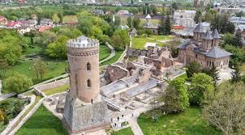

Târgoviște is a city in the region of Muntenia, Romania, and the county seat of the Dâmbovița County. It is situated on the right bank of the Ialomița. At the 2011 census Târgoviște had a population of 79,610, making it the 26th largest city in Romania. One of the most important cities in the history of Wallachia, it was its capital between the early 15th century and the 16th century. The name Târgoviște is a Slavic name which the city acquired in the Middle Ages. It is derived from the Old Bulgarian word for "marketplace", referring to the place rather than the market itself.

Main attraction: The Royal Court
The complex of monuments which form the Royal Court of Targoviste represents one of the most important architectural group from Tara Romaneasca (the Romanian Country) and has a great artistical and historical value. Being a royal residence for many centuries, the Royal Court offers the possibility of revealing a chapter of the romanian medieval art and history. Starting with the year 1967, the Royal Court was transformed into a museum ensemble of the Muzeul Judetean Dambovita (the Museum of the County Dambovita) and now is part of the National Museum Ensemble "the Royal Court" of Targoviste. Besides the outdoors museum there is an exhibition dedicated to Vlad Tepes (Vlad the Impaler), founder of the fortifications; a lapidarium at the Royal Court's basement built by Petru Cercel and an exhibition of religious art in the great Royal Church.
2. Fierbinti-Targ
This village is known for filming the Romanian series "Las Fierbinti". This series is the most famous comedy series in the country, being loved by all Romanians. Its broadcast began in 2012, and since then its audience has grown exponentially. Due to the success, all those who come to Bucharest wanted to make a stop in Fierbinti. Their goal is to take a picture at Bobonete's or Oaie's bar. The plot classified it as a rural comedy where the intrigues caused by the upcoming elections in a small village give rise to a ridiculous war between the mayor and deputy mayor. Unfortunately, they have no clue that their struggle will prove to be in vain at the end of the election day. It has a total of 343 episodes arranged in 17 seasons.
3. Snagov
Snagov (population: 6,041) is a commune, located 40 km north of Bucharest in Ilfov County, Muntenia, Romania. According to the 2002 census, 99.2% of the population is ethnic Romanian. The commune is composed of five villages: Ciofliceni, Ghermănești, Snagov, Tâncăbești and Vlădiceasca. Snagov is a tourist and spa resort, but the necessary infrastructure has regressed after 1989. The Snagov name is of probably Bulgarian origin, from the word sneg (meaning "snow") or snaga, meaning "human body". Archaeologists confirmed human presence of inhabitants since 400 BC. Snagov village was built around Lake Snagov and Snagov monastery, founded in the late 14th century on an islet in Lake Snagov, about 2 km north of Snagov village. The first written record of it is found in a document from the court of Mircea cel Bătrân and dated 1408. Snagov monastery was excavated in 1933 by archaeologist Dinu V. Rosetti.
Main attractions: Snagov Palace
Snagov Palace is a former royal palace on the shore of Lake Snagov, about 40 km north-east of Bucharest, in Ilfov County, Romania. The palace is situated in the commune of Snagov and near the Snagov monastery. Snagov Palace was built in the early 1930s by Henrieta Delavrancea-Gibory for prince Nicholas of Romania, brother of king Carol II. It was built on the grounds of the royal hunting lodge Scroviște, which dated from the 19th century. The new palace was constructed in the Romanian Brâncovenesc style and completed in 1932. The palace has a formal garden with fountains, which was landscaped by the Austrian landscape architect Rebhun. Prince Nicholas hardly used the palace due to a conflict with the king about his morganatic marriage and his expulsion from Romania in 1937. After his departure the palace was meant to be used by politicians, artists and writers, but was hardly used. After 1940 it was occasionally used by the Romanian dictator Ion Antonescu as a summer residence.